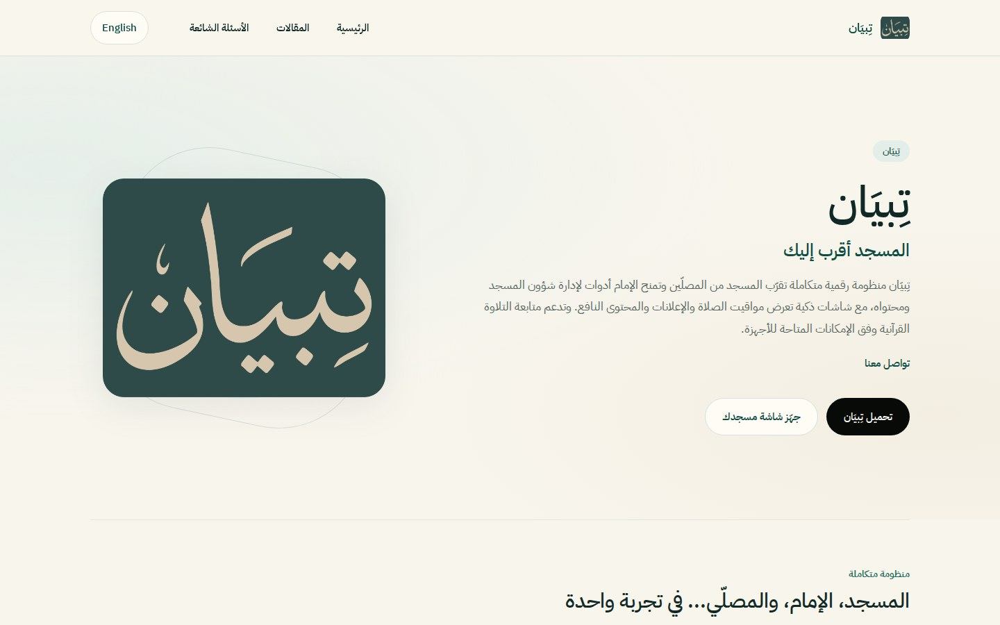

View the original product page ↗

Featured / real-world product
Tebyan
A mosque ecosystem connecting imam controls, worshipper experiences and display devices. Designed around unreliable connectivity, constrained hardware and minimal manual interaction.
Engineering case study
Challenge: Displays need dependable prayer schedules and transitions even when connectivity is poor. Live recitation tracking adds resource and latency constraints.
Approach: Separate device runtime from control interfaces; cache schedules locally and explore compact speech models and constrained text alignment. Prioritize predictable behavior and graceful failure.
Explore the system
Interactive conceptual walkthrough
The device loads prayer schedules and its configured display behavior. The local runtime determines when to switch between display states.
Team source private · official product website
Explore live product & gallery ↗